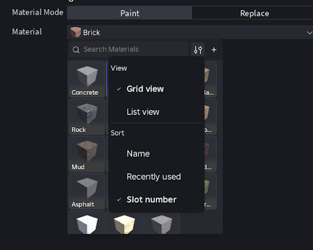
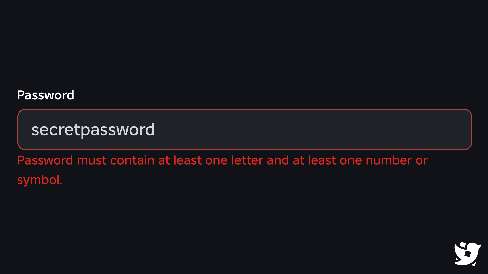

JocRoblox (platformă)
37 postări · cele mai noi primele · vezi în blog cu filtre
 ZVON29 octombrie 2026Roblox (platformă)
ZVON29 octombrie 2026Roblox (platformă)ZVON: Roblox ar bana creatori UGC pentru cuvinte ca „dollhouse” sau „com” în descrieri
⚠️ ZVON, neconfirmat de Roblox. Contul @RoGameNews (RoNews) a scris pe 24 oct că Roblox a început să modereze descrierile itemelor din…
CONFIRMAT28 octombrie 2026Roblox (platformă)Roblox Studio: 62 de materiale custom pentru teren, acum live pentru toți
Roblox a scos din Early Access materialele custom pentru teren (Custom Terrain Materials). E lansare completă, nu beta: poți publica…
ZVON27 octombrie 2026Roblox (platformă)ZVON: Roblox ar fi schimbat regulile de parolă — cel puțin o literă și o cifră sau un simbol, plus minim 8 caractere
⚠️ ZVON, neconfirmat oficial de Roblox. Contul @Roblox_RTC (care urmărește schimbările Roblox) a scris pe X, pe 26 oct (04:14, ora… CONFIRMAT26 octombrie 2026Roblox (platformă)
CONFIRMAT26 octombrie 2026Roblox (platformă)Roblox testează un Home nou pe ecrane mari: avatarul tău stă mereu în dreapta
🖥️ Roblox a anunțat pe DevForum un test cu un Home nou în aplicație, pe ecranele mari ținute pe orizontală: mai ales PC, console și…Roblox (platformă)CONFIRMAT26 octombrie 2026Roblox (platformă)Top creșteri pe Roblox din 21 oct: Fix My Phone! +106%, Bike Universe +36%
📈 Jocurile care au crescut cel mai mult pe Roblox, după trackerul @RobloxGameStats, la 21 oct. • 🥇 Fix My Phone!: +106% (7,6K jucători) •…Roblox (platformă)CONFIRMAT26 octombrie 2026Roblox (platformă)Roblox face TextChatService obligatoriu: chat-ul devine nativ, migrarea e obligatorie până în mai 2027
Roblox schimbă cum merge chat-ul în toate jocurile. Pe DevForum, Roblox a anunțat (21 oct) că chat-ul devine mai „nativ”, cum e deja voice… CONFIRMAT25 octombrie 2026Roblox (platformă)
CONFIRMAT25 octombrie 2026Roblox (platformă)Iconița clasică Roblox a revenit pentru cine folosește tema clasică
Iconița clasică a aplicației Roblox (R-ul roșu, pe fond alb) pare să fi revenit. Dacă folosești tema clasică a aplicației, ea înlocuiește…Roblox (platformă)CONFIRMAT24 octombrie 2026Roblox (platformă)Roblox: fără thumbnail custom, jocul tău nu mai apare în recomandările de pe Home
🖼️ Roblox a anunțat pe DevForum că doar jocurile cu cel puțin un thumbnail custom mai primesc afișări din recomandările de pe Home.… CONFIRMAT23 octombrie 2026Roblox (platformă)
CONFIRMAT23 octombrie 2026Roblox (platformă)Hollow Horseman: bundle oficial Roblox de 31.000 Robux
🎃 Contul oficial @Roblox a anunțat bundle-ul Hollow Horseman pe X, vineri, 23 oct, la ~02:00 (ora României): „head’s off. gear’s on. the… ZVON23 octombrie 2026Roblox (platformă)
ZVON23 octombrie 2026Roblox (platformă)ZVON: Roblox blochează conturile „bot” cu CAPTCHA și verificare de identitate
RoUtility, un cont de știri Roblox, zice că Roblox are un sistem nou care prinde conturile „bot”. 🤖 • 🔒 Conturile care fac cereri automate… CONFIRMAT23 octombrie 2026Roblox (platformă)
CONFIRMAT23 octombrie 2026Roblox (platformă)Roblox: jocurile îți pot salva în inventar imagini făcute în joc
Roblox a lansat publicarea de imagini direct din joc (anunț pe DevForum, luni 19 octombrie, 19:46 ora României). 🖼️ • 🎨 Un joc te poate… ZVON22 octombrie 2026Roblox (platformă)
ZVON22 octombrie 2026Roblox (platformă)ZVON: Roblox pregătește „Școli”, cu item gratis pentru membrii fondatori
Eli Cauvert, un cont mic de leak-uri Roblox, a postat un video de 75 de secunde cu un feature nou la care ar lucra Roblox: „Școli”. • 🏫…Roblox (platformă)CONFIRMAT22 octombrie 2026Roblox (platformă)Roblox Studio 744: GetCollections și coliziuni calculate async
Pentru developeri: Roblox Studio 744 a apărut (release notes, 22 oct). 🛠️ • CollectionService:GetCollections(Instance) e nou și returnează… ZVON21 octombrie 2026Roblox (platformă)
ZVON21 octombrie 2026Roblox (platformă)Roblox: vârf de 26,9M jucători simultan sâmbătă
RoTerminal, un cont care urmărește statistici Roblox, a publicat cifrele săptămânii. Pe scurt: • 📈 Vârf: 26,9M jucători în același timp,… CONFIRMAT20 octombrie 2026Roblox (platformă)
CONFIRMAT20 octombrie 2026Roblox (platformă)Jocul Roblox al BBC Bitesize, acuzat de părtinire politică
Un joc educațional de pe BBC Bitesize, găzduit pe Roblox, a ajuns subiect de polemică în Marea Britanie, potrivit Mail on Sunday. Ce… CONFIRMAT20 octombrie 2026Roblox (platformă)
CONFIRMAT20 octombrie 2026Roblox (platformă)Roblox Studio: texturi 4K generate cu AI (Quality mode, beta)
Roblox a adus în Studio un mod nou pentru texturile generate cu AI: Quality. E în beta. 🎨 Ce alegi când generezi o textură: • Quality:…